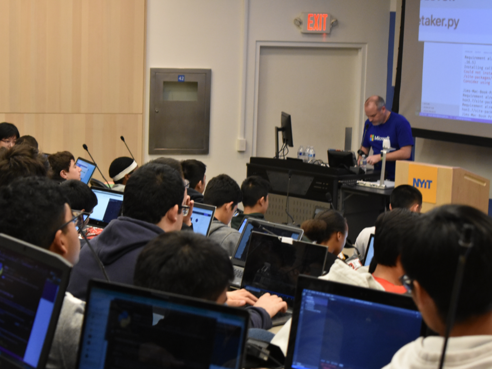

Arpitha Vinod arpithav@teenhacksli.com
Alice Liu aliceliu@teenhacksli.com
Unprecedented times call for unique answers to unprecedented problems. While TeenHacks LI can’t support an in-person 24 hour hackathon due to COVID-19, we are adapting to a new format: a triathlon, but for hackers!
Have you ever participated in a triathlon? It involves three types of races: swimming, cycling, and running. Our tri-hackathon is divided into three exciting parts as well: Learn-a-thon, Build-a-thon, and Share-a-thon! Though we can’t host hackers in person, we now have an opportunity to expand our work to three separate events—combining the best parts of a hackathon!
Here’s some info about our upcoming event: First up: the Learn-a-thon on November 7th. The name says it all—we will host an 8-hour conference (from 12-8pm) where participants will have the opportunity to learn new professional skills from sponsored companies as well as from our very own team. We will have online workshops, games, and Q&A sessions (where the time will be divided into ⅔ workshops and ⅓ hacking). Some interesting workshops we have held in the past include ones on Microsoft Azure, ZEIT (a cloud computing tool), and animation, and this year’s will be just as exciting and informative.
With all of the profound knowledge you just gained, what are you going to do with it? That’s right: build! The 24-hour Build-a-thon, held on November 14th, is where all participants will gain the opportunity to apply first-hand experience from the Learn-a-thon!! Build-a-thon will be dedicated to hacking—using software and hardware to build upon your ideas. Though the focus is primarily on hacking, hackers are still encouraged to attend workshops and share their progress as well! There will also be games during this phase (e.g. Kahoots).
Finally, what’s the use of learning and building if you can’t collaborate or share? Our last event is the 4-hour Share-a-thon (on November 21st), where participants can share their projects, speak about what they learned over the course of the tri-hackathon, and demo their projects! This can be done via Twitch live, or can even be pre-recorded and sent to us. At the end, there will be prizes offered to the winners. Don’t fret—we will ship TeenHacks swag to all participants!
Of course, these are just the basics! As the date for the tri-hackathon approaches, more details will be given out—so make sure to keep updated! All events will definitely be held on Discord, and Zoom, Google Meet, or Slack, will be used too. We will also be sharing projects via Twitch. All events will be recorded as well, in case some participants are absent. Even though an in-person hackathon won’t be possible for this fall, we know our tri hackathon—which highlights the three fundamental skills of learning, building, and sharing -- will be just as exciting! You can register early NOW at TeenHacksLI!